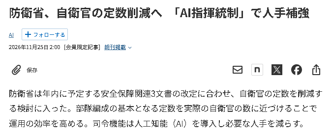

대만 문제로 중국에 싸움 걸었으면서 군축 중인 일본.
https://www.dogdrip.net/736514810
현재 일본은 소비세 감소를 포함한 각종 감세 정책과
이란 전쟁과 중국과의 외교 마찰로 촉발된 여러 문제로
돈이 왕창 왕창 나가는 중.
그래서 이것 저것 나가는 돈을 깎고 있는데 국방비도 대상이다.
자위대 군사 장비도 신규 발주를 평균 50%, 최대 80%까지
삭감하기로 한 상태.
그런데,

https://www.nikkei.com/article/DGXZQOUA20BWZ0Q6A121C2000000/?n_cid=SNSTW005&n_tw=1795576968
자위대 인원도 줄이기로 결정함.
일단 만성적인 모집 인원 부족을 이유로 들긴 했지만
이것도 국방비 삭감 여파로 보는 시각이 많다.
경제 문제로 군축하기 → 외교만 잘하면 군축한 만큼 실리 추구 할 수 있으니까 이해 가능한 움직임.
외교 충돌로 군사 긴장 늘리고 군대 확대하기 → 무모하다는 비판은 피할 수 없지만 이해 가능한 움직임.
외교 충돌로 군사 긴장 늘리고 군축하기 → ???
당장 중국이랑 대만 문제로 갈등 늘리고 있는 상황에서 군축을 하니,
일본에서도 이해 못 하겠다는 반응이 대다수
총리가 무능한데 지지율이 높다는게 신기함...